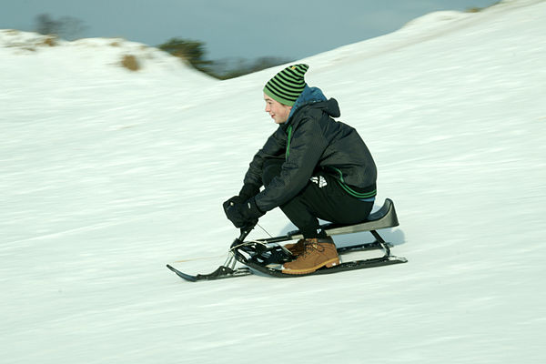
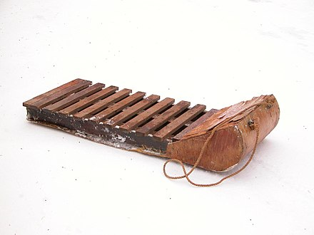

Sledding is a winter sport typically carried out in a prone or seated position on a vehicle generically known as a sled (North American), a sledge (British), or a sleigh. It is the basis of three Olympic sports: luge, skeleton and bobsledding. When practised on sand, it is known as a form of sandboarding. In Russia sledges are used for maritime activities including fishing and commuting from island to island on ice.
The practical use of sleds is ancient and widespread. They were developed in areas with consistent winter snow cover, as vehicles to transport materials and/or people, far more efficiently than wheeled vehicles could in icy and snowy conditions. Early designs included hand-pulled sizes as well as larger dog, horse, or ox drawn versions. Early examples of sleds and sledges were found in the Oseberg Viking ship excavation.[1] The Toboggan sled is also a traditional form of transport used by the Innu and Cree of northern Canada and the people of Ancient Egypt are thought to have used sledges (on the desert sand and on ramps) extensively for construction.
The generic term sledding refers to traveling down a snowy hill using a sled such as a Flexible Flyer with wooden slats and metal runners. It is usually done during the winter when there is snow.[2] Flat plastic or aluminum discs and improvised sleds (carrier bags, baking trays, cafeteria trays, sheets of cardboard, etc.) may also be used. The activity has been known to exist as a fringe recreational activity far into the distant murky past in toboggan-type sleds which seasonally supplant the ubiquitous cart.
The first ride down a hill on a sled is the most important, but also the most difficult, as it determines the path of the sled for further runs down the hill. It is essential to steer the sled along the most exciting course, perhaps adding twists and turns to make the run down the hill faster or more exciting. Other techniques to improve the ride include turning around, lying on the stomach, or closing both eyes. Running up to a sled and jumping onto it can create additional momentum and improve ride speed. This technique can be referred to as "Flopping."
Learn From Caroline's Skiing Encyclopedia Page: https://carobyers.github.io/assignment3.html
Source: https://en.wikipedia.org/wiki/Sledding#Recreational_sledding_techniques